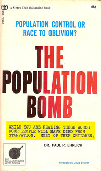

Expertos, zorros y erizos
A fines del 2007 BussinesWeek publicó el pronóstico de 54 economistas para el año siguiente, bajo el título “A Slower But Steady Economy” 1, un desastroso año más tarde, y sin siquiera arrugarse se publicó el nuevo pronóstico para 2009, bajo el título: “A Slower But Steady Economy”2.
En nuestra época los economistas inspiran el mismo grado de respeto que las pitonisas de Delfos para los griegos, lo que digan, por vago que parezca, es escuchado por las más altas autoridades y responsables de tomar decisiones. Pero parece que a nadie parece importarle que estas predicciones sistemáticamente se equivoquen.
Al igual que los viejos oráculos los expertos tienen argumentos para sobreponerse a las críticas. “Estaba casi en lo correcto”, es una frase típica, o la otra, “podría haber sucedido de no haber sucedido un evento inesperado”. Otro es la idea de la profecía autofrustrada, es decir, que el hecho de realizar la predicción provoca que esta no se cumpla. ¿Recuerdan lo que pasó con el año 2000, el famoso Y2K? Bueno, hubo expertos que afirmaron que los computadores fallarían el 1 de enero de 2000 y la civilización colapsaría.
“Los fatalistas se jactaron de que sus predicciones habían provocado los esfuerzos masivos de remediación que salvaron a la humanidad de su destino inevitable: 'de nada'.”[3]
Otro truco es el “espera y verás”, hay muchas predicciones con ventanas de tiempo bastante vagas, de modo que cuando un observador piensa que la predicción no se cumplió, el experto puede insistir que aún no ha llegado el tiempo: “espera y verás”. Una variación es correr la ventana de tiempo, en este caso el experto ha hecho una predicción con un plazo específico que no se ha cumplido, el vaticinador nos concede este hecho, pero insiste que es un detalle menor, lo que importa es que el evento predicho ocurrirá.

Un ejemplo, en 1968 el biólogo norteamericano Paul Ehrlich publicó un libro llamado The Population Bomb, en que predecía que se producirían hambrunas a nivel mundial en la década de 1970, “la batalla para alimentar a toda la humanidad está perdida. En los 1970's, el mundo será azotado por hambrunas, cientos de millones se morirán de hambre a pesar de cualquier programa de choque en que nos embarquemos ahora”, y sabemos lo que sucedió, la producción de alimentos aumentó. En la llamada “revolución verde", entre 1961 y el 2000 la población mundial se duplicó, y el consumo de calorías por persona se incrementó en un 24%3.
A pesar de todas estas evidencias, Paul Ehrlich insiste que no hay problemas con sus predicciones, incluso en 2009 aseguró que “quizás la falla más seria en La Bomba [se refiere al libro], fue que era demasiado optimista sobre el futuro” (aunque reconoce que subestimó el impacto de la “revolución verde”).
Un último, y lamentable argumento, es la predicción elástica. “Yo no dije que el evento X sucedería, lo que dije fue que el evento X podría suceder”, y con esa frase en condicional queda abierta la posibilidad a que el evento no pase. Así que si el evento no sucedió no significa que la predicción esté mal.
Claro que las cosas no son tan simples, porque a veces hay algo de razón en estos argumentos. Por ejemplo, las predicciones sobre las consecuencias del daño a la capa de ozono si provocaron que los gobiernos tomaran acciones y generaran políticas que evitaran que estas predicciones se cumplieran, esta fue efectivamente una “profecía auto frustrada”. También es cierto que el hecho de que no hubiera hambrunas globales a fines del siglo XX, no prueba que el crecimiento de la población no vaya a generar hambrunas en el futuro, como dice Ehlrich.
Así que podemos argumentar en favor o en contra de los expertos y sus predicciones. Lo que deberíamos buscar es tratar de determinar la tasa de falla de los expertos. Eso es precisamente lo que hizo Tetlock en su experimento que mencionamos en nuestro artículo anterior.
Tetlock comparó las predicciones con los expertos respecto a un modelo
estadístico simple. Se tabularon 27.450 predicciones realizadas por 284
expertos (cientistas políticos, economistas y periodistas). La
inquietante conclusión es que las predicciones de los expertos no son
más certeras que una conjetura al azar. Pueden visitar a un astrólogo,
a un profesor de Harvard, o leer un a galletita de la fortuna. Tendrán,
en esencia los mismos resultados, al menos la galletita se puede comer
:wink: En realidad esa no es la conclusión de Tetlock, es la de Dan
Gardner
Lo interesante es que Tlelock encontró una gran variación entre expertos individuales.
“Hay una gran variedad. Algunos expertos están desconectados de la realidad, casi a un límite delirante. Otros expertos están sólo ligeramente desconectados. Y unos pocos expertos están sorprendentemente matizados y bien calibrados.”[3]
La diferencia entre estos tipos de expertos no está dada por sus perfiles profesionales, su nivel de educación, ni sus tendencias políticas. Lo que hace la diferencia es la manera en que piensan.
Los expertos que lo hicieron particularmente mal, peor que una predicción aleatoria, eran los que no estaban cómodos con la incerteza y la complejidad. Siempre trataban de reducir el problema a un único tema teórico central, y usaban este tema una y otra vez. Estos expertos eran los que sentían que sus predicciones eran más seguras, es decir, eran los que más confiaban en sus propias capacidades de predicción. Estos expertos están seguros que su Única y Gran Idea es correcta y por ende las predicciones que se ajustan a esta idea deben serlo.
Por otro lado, los expertos que lo hicieron mejor que el promedio, y ligeramente mejor que una predicción al azar, pensaban de forma diferente. No tenían un patrón. Al contrario, toman información e ideas de diversas fuentes, y buscan sintetizarlas. Fueron autocríticos, siempre cuestionando si lo que ellos pensaban que era verdad realmente lo era. Y cuando se les mostró que estaban equivocados no trataron de minimizar, protegerse o evadir. Simplemente reconocieron que estaban mal y ajustaron su pensamiento en consecuencia. La mayoría de estos expertos estaban cómodos con la idea de que el mundo es complejo y lleno de incertezas, de hecho tienden a dudar en la habilidad de cualquiera de predecir el futuro. Así que se produce una paradoja, los expertos que son mejores prediciendo tienden a tener menos confianza en sus predicciones.
En su famoso ensayo “El Zorro y el Erizo” 4, el pensador liberal Isaiah Berlin cita un fragmento de un poema de Arquíloco:
“El zorro sabe muchas cosas, el erizo sabe una sola gran cosa.”
En honor a Berlin, Tlelock denominó a estas dos clases de expertos “zorros” y “erizos”. Los zorros son mejores que los erizos. Analizando en mayor detalle los datos, Tlelock encontró que los erizos que son ideológicamente extremos son peores predictores que otros de su clase. Incluso encontró que cuando los erizos hacen predicciones sobre su especialidad particular su precisión declina, y empeora si es una predicción a largo plazo.
Es fácil distinguir a los erizos, sobretodo los que salen en los medios, son certeros, confiados, claros, no se preocupan de los detalles, las complicaciones, complejidades, o incertezas. Tlelock encontró que mientras más grande es el perfil mediático del erizo menos precisa son sus predicciones. Paul Ehrlich, por ejemplo, es un erizo.
El gran problema es el exceso de confianza, y la desconexión con la realidad. La lección del trabajo de Tlelock es que las personas pueden ser inducidas a ser más como los zorros, más auto críticos, reflexivos, y de esa manera pueden ser capaces de ver mejor lo que viene, y prepararse para manejar la incerteza y complejidad del mundo. Es mejor ser flexible, abierto a la duda, con muy pocas certezas, como el zorro. Reconozcamos que, no importa lo inteligente que seamos, lo sofisticado de nuestra forma de pensar, el cerebro que usamos es limitado, y el mundo es esencialmente impredecible.
-
Está disponible online en https://www.businessweek.com/interactivereports/economistforecast.html, la bajada dice: “The economy won’t sink into a recession next year. That’s the overwhelming view among the 54 economists in BusinessWeek ’s annual economic outlook survey” (La economía no se hundirá en una recesión el próximo año. Esa es la opinión mayoritaria entre los 54 economistas en la encuesta anual de BusinessWeek sobre erspectivas económicas.) ↩︎
-
Aunque ustedes no lo crean, disponible también en https://www.businessweek.com/interactivereports/economistforecast_2008.html, la bajada dice: “The economy will begin 2009 mired in a long and deep recession, before a tepid start toward recovery in the second half. That’s the view of the 45 economists in BusinessWeek’s annual economic outlook survey.” (La economía comenzará 2009 sumido en una recesión larga y profunda, antes de empezar tibiamente la recuperación en la segunda mitad. Ese es el punto de vista de los 45 economistas en la encuesta anual de BusinessWeek de las perspectivas económicas.) ↩︎
-
Con sus pro y contras, hay que reconocer que estas técnicas permitieron que la India aumentara en un 20% el consumo de calorías por persona, en Corea del Sur 44%, Indonesia 69%, y en China, que tuvo una hambruna que mató a más de 30 millones de personas entre 1959 y 1969, el aumento fue del 73%. En países como Estados Unidos uno de los principales problemas de salud ahora es la obesidad. Personalmente no tengo problemas con los transgénicos, pero si critico el control económico y abuso que se hace de esta tecnología, pero esa es otra discusión. ↩︎
-
En español se encuentra a veces traducido como El Erizo y la Zorra, erizo también conocido como puercoespín.En español, Editorial Península, ISBN9788483079034 ↩︎